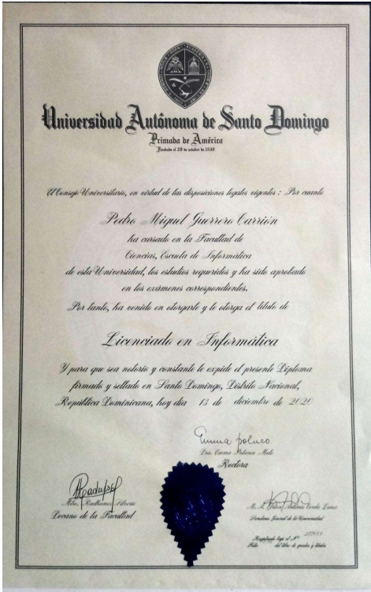
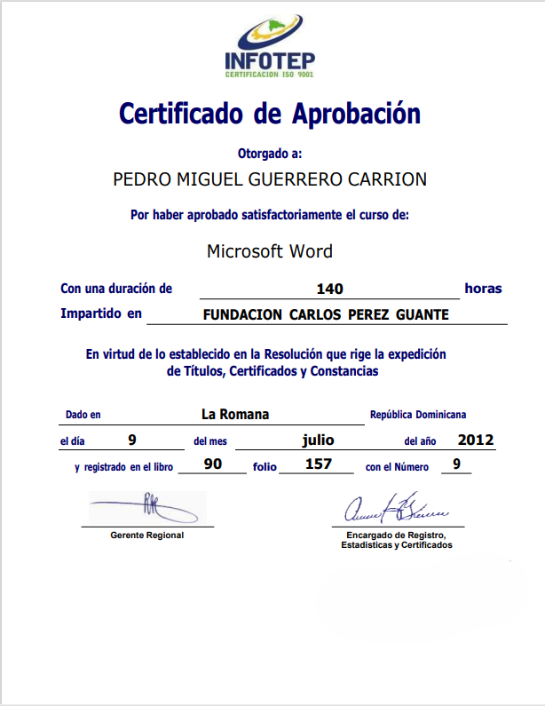
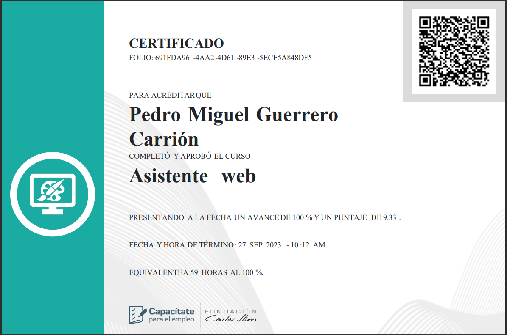
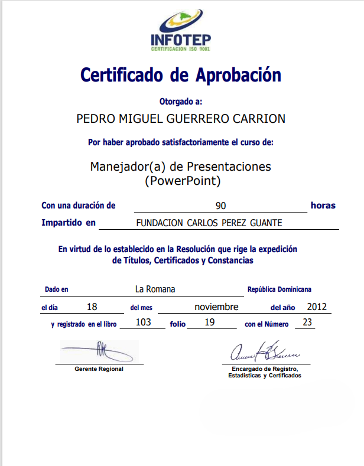
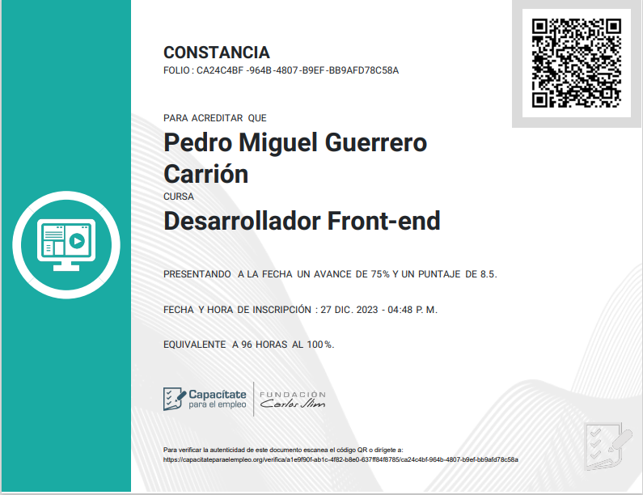

Formación Academica
Lic. En Informática
Universidad Autonoma de Santo Domingo (San Pedro - UASD) 2013 - 2020 
×

Maestría en Auditoria & Seguridad Informática
Universidad Autonoma de Santo Domingo 2022 - ActualidadFormación Técnica / Profesional
Certificado en Microsoft Work
Infotep 2012/San Pedro de Macoris 
×

Asistente Web
Capacitate para el Empleo 2023/Virtual Desarrollador Back-End
Capacitate para el Empleo 2024/Virtual/ActualmenteManejador(a) de Presentaciones
Infotep 2012/San Pedro de Macoris Desarrollador Front-End
Capacitate para el Empleo 2023/Virtual Experiencia
Maestro de Programación
Colegio CEDEPSI 2019 - 2020Enseñanza de fundamentos de programación a estudiantes de secundaria.
Desarrollo de materiales didácticos y ejercicios prácticos para fomentar el aprendizaje activo.
Soporte Técnico
Centro Hospitalario UCE 2020 - 2021-
Mantenimiento y resolución de problemas técnicos en sistemas informáticos y redes.
-
Soporte a usuarios finales para garantizar el correcto funcionamiento de equipos y software.
Programador Front-End
Freelance 2020 - 2022Desarrollo de sitios web y aplicaciones web para diversos clientes.
Trabajo con tecnologías como HTML, CSS, JavaScript, React, Api Rest para crear interfaces de usuario atractivas y funcionales.
Colaboración con diseñadores y otros desarrolladores para entregar proyectos a tiempo y con alta calidad.